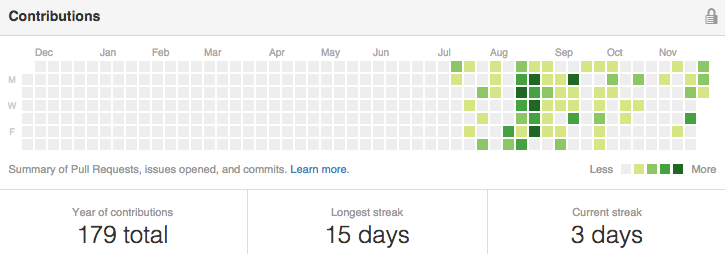
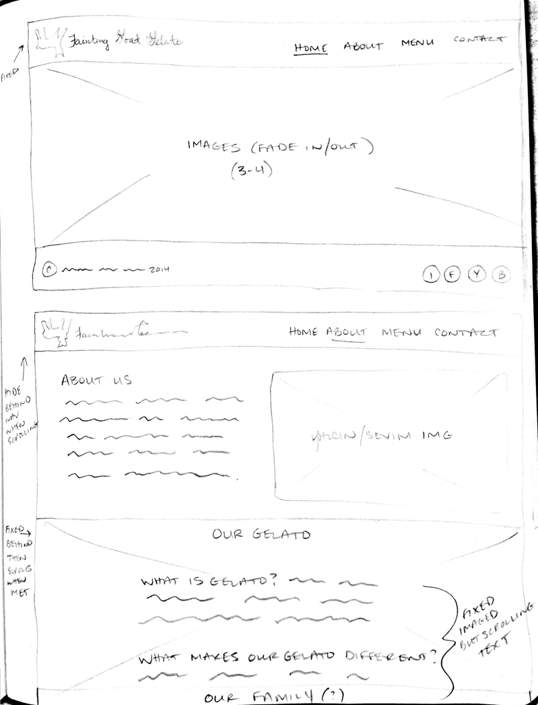
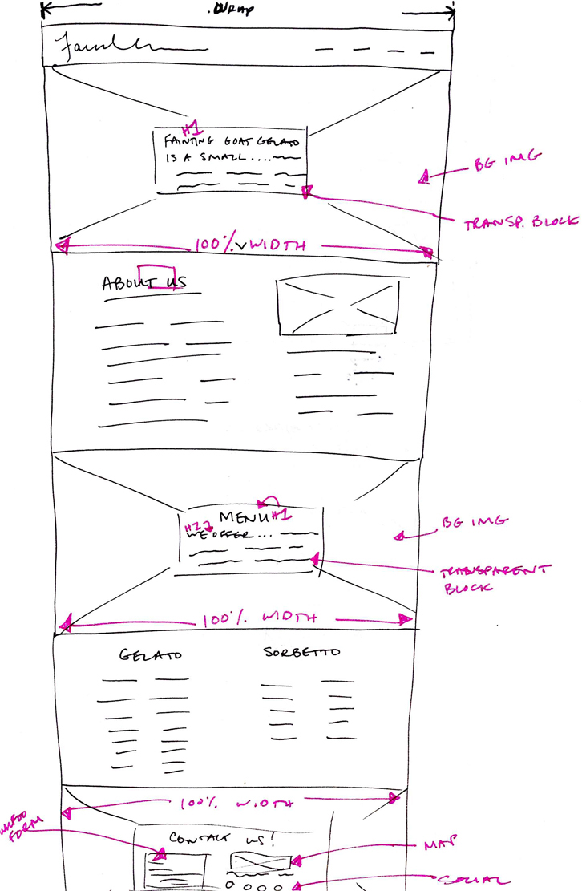
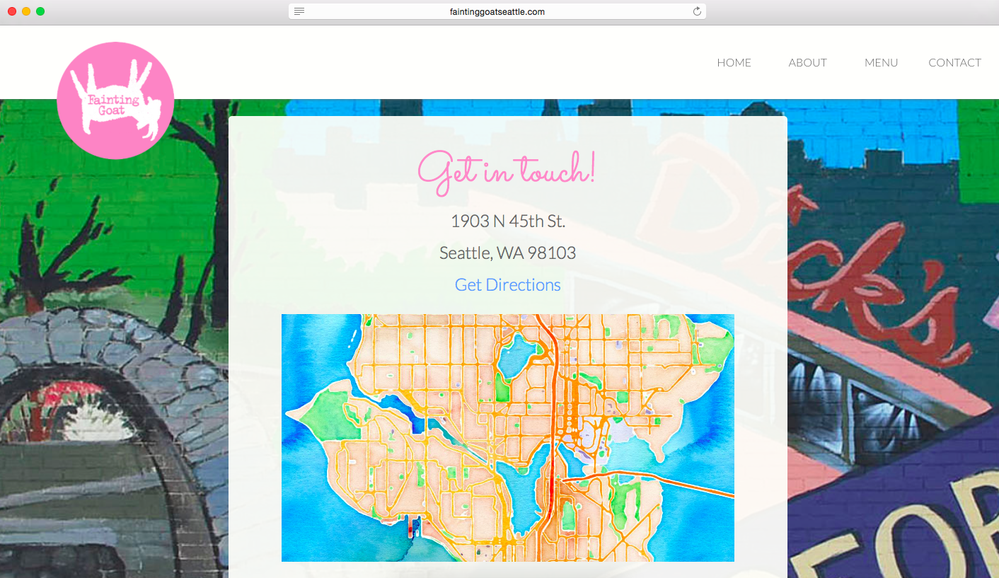

This was written in 2014 as I was just starting out in my design career. I didn't have much work to show at the time and wanted to make the most out of this simple web project. I shot all of the photography, designed the site, and wrote the code from scratch. Years later, I'm still proud of the work I did, and get a kick out of reading such a detailed case study on what I would now consider a quick weekend project.
Fainting Goat Gelato was the first website I designed and built. Already a loyal customer, I noticed the only web presence they had was an outdated Blogger site. I approached the owners about building a new site from scratch, free of charge, so that I could gain experience with relatively low stakes (and low expectations). After convincing them I had no ulterior motives, I was given full creative control.
I began by meeting with the owners to discuss their needs and the needs of their customers. We decided that the site should be simple, easy to use, and include the following top-level navigation: Home, About, Menu, Press, Contact. At the last minute, I added a Blog section which simply linked to their existing Blogger site.

After meeting with the owners, I jumped straight into designing mocks. I gathered as much content as I could find; screenshots, images from Yelp and Google, existing copy from their blog, and press articles. I made sure the navigation showed selected states, the color palette was complementary and fun, and the company name was prominent and legible.
Once I felt confident in the design, I started building the mocks using HTML and CSS. I scrutinized every line of code, double-checked every link, and ensured that the markup and style sheets were pixel perfect representations of my designs. I was just about ready to launch this bad boy....

...and then I accidentally deleted all my code.
Once I got over the initial heartbreak, I realized it was all for the best, as I quickly started noticing flaws in the previous design:
I also removed the Blog section for a few reasons:
When I learned there was a way to backup my code so that it was accessible on any machine, at any time, I took a few days off to deep dive on Git, GitHub, and Terminal.
The ability to share what I was working on with my peers was an added bonus. After consuming endless tutorials, receiving guidance from experienced friends, and dozens of commits later, I knew there was no turning back.
I set up a time to shoot some higher quality photos than the ones I gathered previously. Photography has been a passion of mine since I started high school, so I was psyched on the idea of incorporating it into my design work.


Once I had all the content, I took another stab at the mocks. I played around with different ideas but nothing seemed to be working.
I wanted playful, but not too loud, minimal, but not too sparse, original, not banal. Feeling stuck in my mocks, I moved back to pen and paper.
I sketched out some ideas that included parallaxing sections throughout the site, plus a fading image slider on the home page.
I scoured the best, up-to-date, parallaxing sites I could find, and tried my hand at reverse-engineering them. While I was able to make everything parallax, I didn’t really know how the site worked. Basically, it was glued together with duct tape and chewing gum, and I didn’t feel confident I would be able to fix it if something went wrong.

As impressive as it looked, I decided to scrap it.
My final sketches tied everything together once I decided on a single page layout. Using strong images as full-width backgrounds allowed me to say less, letting the images do most of the talking.
I wanted to come right out of the gates with something airy, enticing, and fun, so I changed their traditional logo from red to pink, and created a color palette to match (fun fact: the owners loved the pink logo so much, they want to permanently change it.)
The Home page intro delivers the site identity and mission, which answers important questions for the visitor:
I wanted users to have persistent navigation to the home page by clicking the logo, whether it was from the main site or 404 page.
As I mentioned earlier, the About section was heavily trimmed down, omitting needless words while providing several benefits
For the menu, I originally decided to include the flavors offered throughout the year (noting ones that are seasonal) and that any off-hand special flavors can be announced through their Facebook. In the end, it seemed redundant to list flavors that are seasonal when it already mentions the flavors are rotated daily. This was an important piece of information for two reasons:
The Contact section included only the necessary information:
I featured the local neighborhood mural as the background, and a custom watercolor map that linked to their location on Google Maps.
Finally, I made sure to include accessibility features such as “Skip to Content” and alt tags on images, or at least empty quotations so the image could be skipped over if not pertinent.
“Great, the site is finished! Now how do I get it on the internets?!”
With the help of my peers, guided tutorials, and hours of practice, I learned about setting up a static web page using a custom domain through Amazon Web Services.
Once the owners and I settled on a name, I registered the domain through Namecheap.
Next, I used Amazon S3 to create buckets, which are basically just storage units for data. I created two buckets (www.faintinggoatseattle.com and faintinggoatseattle.com) so that requests for both led to the same place.
Next, I configured Route 53 as my DNS provider, and transferred all of the DNS records from Namecheap. Granted, I could have used the registrar (Namecheap) as my DNS provider, but keeping all my data in one place gave me peace of mind.
I uploaded the final files and waited for them to propagate…

Once the site was live, a wave of boss-inducing adrenaline came over me.
I felt enormous pride for this thing I just created; visiting and revisiting the site thinking “Damn, I made that!” The owners were so happy with the results, as well as my persistence, that they ended up writing me a check for $500.
In the end, I learned: